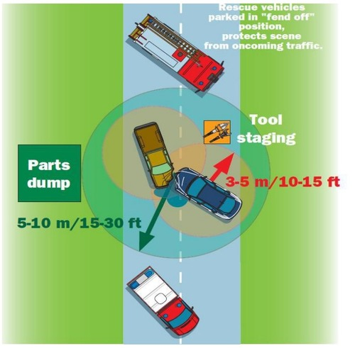
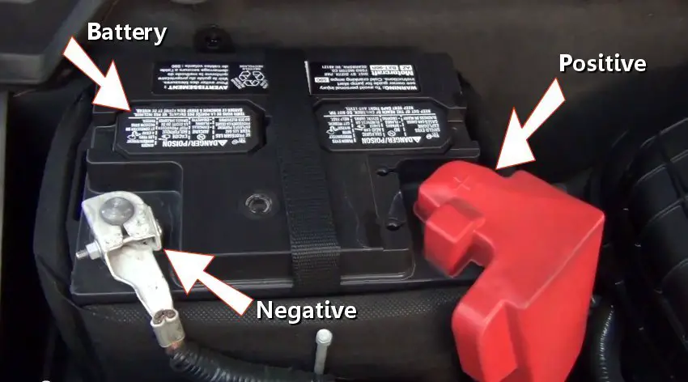

1. What does the “P” in PRIGEDRT stand for?
2. What app can be used to identify vehicle rescue information?
3. What colour are high voltage cables in vehicles?
4. Which battery terminal should be removed first?
5. What is the purpose of the fend off position?
6. What is the approximate distance of the outer circle?
7. What should be done before battery isolation if possible?
8. What colour is SRS airbag wiring?
9. What should be placed near the engine bay ASAP?
10. What injury is common in rear impact collisions?
11. What does “peek and peel” help identify?
12. What is the purpose of a dash roll?
13. What is a KED used for?
14. What type of glass is used for front windscreens?
15. What should be done before using hydraulic tools on a vehicle?